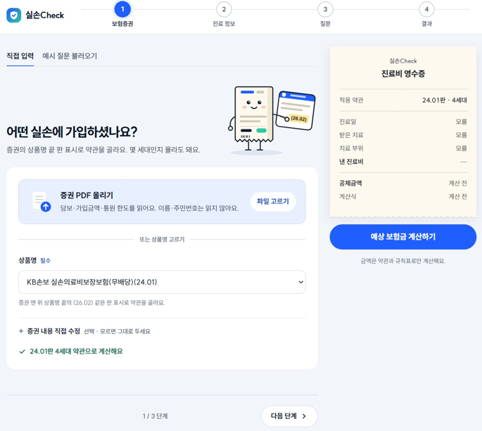
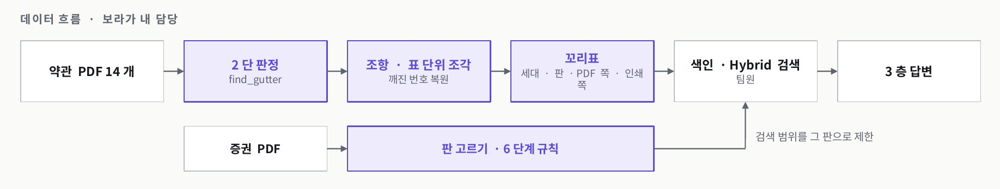
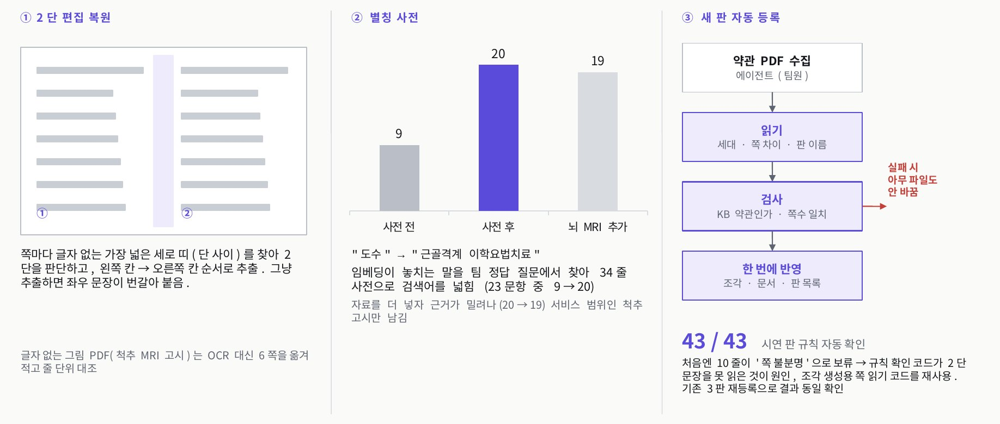

실손 Check
KB손해보험 실손 약관(4세대 24.01·26.02판, 5세대 26.07판)과 금감원·복지부 공개 기준을 근거로, 통원 치료의 예상 보험금과 주의점을 근거 쪽 번호와 함께 알려 주는 RAG 서비스입니다. 금액은 규칙표와 계산 코드가 만들고, LLM은 설명 문장만 씁니다. 저는 그 근거가 되는 데이터를 만들었습니다.

서비스 화면 — 증권으로 약관 판을 고르는 첫 단계
약관 PDF를 근거로 쓸 수 있는 검색 데이터로 바꿨습니다
근거 문서 14개를 조항·표 단위의 조각 564개(약관 498, 기준·사례 66)로 만들고, 조각마다 세대·판·조항·PDF 쪽·인쇄 쪽 꼬리표를 붙였습니다. 답변에 근거 쪽 번호를 표시하는 데 이 꼬리표를 씁니다.

2단 편집 약관의 읽기 순서를 복원했습니다
KB 약관은 가로 A4에 1단과 2단이 섞여 있어, 그냥 추출하면 왼쪽·오른쪽 칸 문장이 번갈아 붙습니다. 쪽마다 글자가 없는 가장 넓은 세로 띠(단 사이 여백)를 찾아 2단인지 판단하고, 왼쪽 칸 → 오른쪽 칸 순서로 읽었습니다.
def find_gutter(words):
"""2단이면 단 사이 x를, 1단이면 None."""
lo, hi = GUTTER_SEARCH
filled = bytearray(hi - lo)
for w in words: # 글자가 덮는 x를 칠함
for x in range(max(int(w["x0"]), lo), min(int(w["x1"]) + 1, hi)):
filled[x - lo] = 1
... # 가장 긴 빈 구간을 찾음
return best[1] if best[0] >= GUTTER_MIN_WIDTH else None
- 5세대 약관의 항 번호(①②)가 깨진 글자로 추출 → 찾아서 다시 붙임
- 제목만 있는 조각 19개 → 뒤 표 조각과 합치고 자동 점검 추가 (578 → 559개)
- 글자 없는 그림 PDF(척추 MRI 고시) → 숫자 하나도 틀리면 안 되는 기준이라 OCR 대신 6쪽을 옮겨 적고 줄 단위 대조
별칭 사전으로 정답 근거 검색을 9개에서 20개로 늘렸습니다
사용자는 "도수"라고 묻지만 5세대 약관은 "근골격계 이학요법치료"라고 씁니다. 임베딩이 놓치는 전혀 다른 말을 팀 정답 질문에서 찾아 34줄짜리 별칭 사전을 만들었습니다. 너무 넓은 말은 엉뚱한 조각을 끌어와 넣지 않았습니다.

자료는 양보다 범위: 뇌 MRI 자료를 더 넣자 'MRI'·'검사' 같은 말이 다른 질문의 근거를 밀어내(20 → 19) 서비스 범위인 척추 고시만 남겼습니다.
세대와 판은 질문 문장이 아니라 증권으로만 정합니다
판마다 보장 조건이 달라 다른 판 조항이 섞이면 정반대 답이 나옵니다. 증권 PDF에서 상품명·계약일·담보·가입금액·통원 한도를 읽고(팀 증권 담보 8개 모두 정답과 일치, 이름·주민번호는 읽지 않음) 그 값으로 판을 정했습니다.
- 상품명 끝의 판 이름(예: 26.02)이 있으면 그 판, 목록에 없으면 지원하지 않는 판
- 판 이름이 없으면 계약일(재가입일 우선)이 판매 기간에 드는 판
- 2021-07-01 이전 계약(1~3세대)은 범위 밖
- 그래도 못 고르면 비슷한 판으로 짐작하지 않고 판 이름을 되물음
사람 없이 등록하되, 틀리면 아무것도 바꾸지 않습니다
목록에 없는 판의 증권이 들어오면 에이전트(팀원)가 KB 상품공시실에서 약관을 가져오고, 데이터 단계가 스스로 읽어 등록합니다. 판 이름이나 쪽이 틀린 채 들어가면 오류 없이 금액이 조용히 틀리는 것이 가장 큰 위험이었습니다. 그래서 KB 약관이 아니거나 쪽수가 다르면 아무 파일도 바꾸지 않고 멈추게 했고, 이미 있던 3판을 새 판처럼 다시 등록해 결과가 똑같은지 확인했습니다.
트러블슈팅 — 시연 판(26.05) 등록 때 규칙 10줄이 '쪽 불분명'으로 걸려 금액이 전부 보류됐습니다. 규칙 확인 코드가 2단 편집의 통원 한도 문장을 못 읽는 것이 원인이었고, 조각을 만들 때 쓴 쪽 읽기 코드를 재사용해 43줄 모두 통과시켰습니다. 발표 시연에서 가져오기부터 금액까지 이어졌습니다.
팀 정답 32문항 계산 일치는 팀 전체 결과입니다.